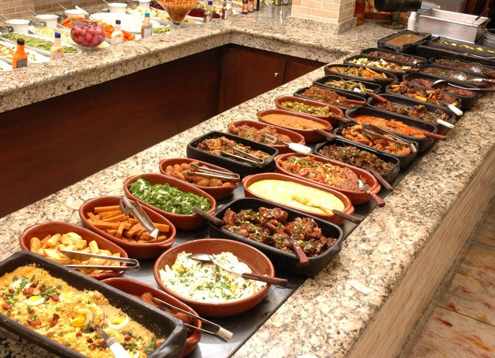

Ínicio
Turismo
Nacional
Carrinho
COMIDA MINEIRA

O HOTEL NACIONAL tem por objetivo proporcionar a melhor comida de Minas Gerais ao seus hóspedes e clientes, deixando todos satisfeito, com um alto padrão de qualidade, feito com carinho e respeito ao seu consumidor. O nosso restaurante nasceu junto do hotel nacional em 1994, na cidade de Poços de Caldas.